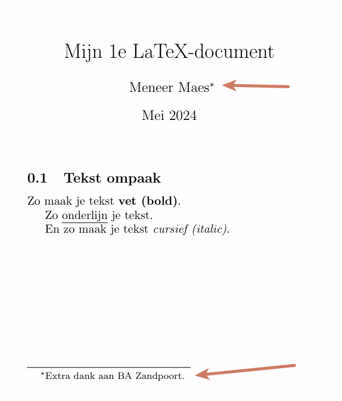

Stap 1: Kies een algoritme
Kies 1 algoritme uit de onderstaande lijst:
Informatica
- Zoekalgoritmen & logaritmen
- Beeldverwerking & matrices
- Grafische weergave, animatie & sinus- en cosinusfuncties
- Program Evaluation Review Techniek
- Netwerksnelheid & bandwidth-delay product
- De wet van Snellius
Blockchain
- Het gebruik van matrices in blockchain
- Hashfuncties & bitwise operaties
Encryptie
- Caesar cipher & Vigenère cipher
- Quantum-Resistant Encryption
- Discrete logaritmen & het Diffie-Hellman algoritme
- Discrete logaritmen & het ElGamal encryptiesysteem
- Additive Homomorphic Encryption
- RSA encryptie & matrices (moeilijk)
💡
INFO
Je mag ook zelf een algoritme kiezen dat te maken heeft met informatica, techniek, economie of wiskunde.
Stap 2: Onderzoek
Beantwoord volgende vragen over je gekozen algoritme.
- Leg het begrip en algoritme zo duidelijk mogelijk uit.
- Sinds wanneer is het in gebruik.
- Geef praktische voorbeelden die te maken hebben met informatica, computers, internet, …
Stap 3: LaTeX paper & formule
Gebruik LaTeX om een paper te schrijven over de bevindingen van je onderzoek.
Voeg een LaTeX-formule toe en leg deze uit.
Kijk in de puntenverdeling waaraan je paper moet voldoen.
Alle informatie over LaTeX die je nodig hebt kan je hier terugvinden:
https://www.overleaf.com/learn/latex/Learn_LaTeX_in_30_minutes
Uploaden
Je upload 2 documenten:
- Je paper in PDF-formaat
- Een tekst-document (word, kladblok, …) met je code.
| Puntenverdeling: LaTeX Paper | |
|---|---|
| Onderzoek | |
| Duidelijke uitleg en je weet waarover je praat | 3 |
| Je hebt een uitgebreide paper | 3 |
| LaTeX document | |
| Je hebt A4-papier | 1 |
| Je hebt een titel en auteur en bij de auteur geef je extra dank aan de persoon die je LaTeX geleerd heeft (zie afbeelding onderaan) |
1 |
| Je hebt titels & subtitels | 1 |
| Je hebt tekst in het vet (bold) cursief (italic) en onderlijnd (underline) | 1 |
| Je hebt een lijst (ordered of unordered) | 1 |
| Je hebt een tabel | 1 |
| Je hebt een inhoudstafel in het begin van je document | 1 |
| Onder je inhoudstafel staat een afbeelding | 1 |
| Je afbeelding heeft een caption en je verwijst later terug naar de afbeelding via het label | 1 |
| LaTeX formule | |
| Je hebt een uitgebreide LaTeX-formule die aansluit bij je onderwerp | 2 |
| Je geeft uitleg over deze formule | 2 |
| Totaal | 19 |
Extra dank aan de auteur
Dit is wat ik bedoel met je geeft extra dank aan een persoon.
